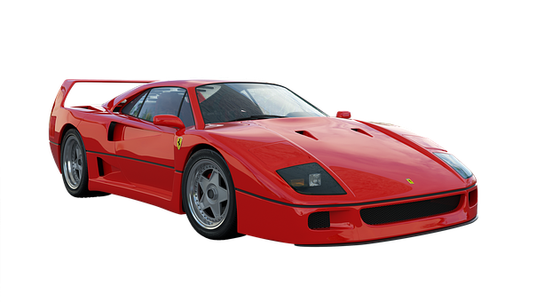

Este icónico vehículo fue apadrinado por 'Il Commendatore' y creado en tan solo 13 meses, destacando por su combinación extrema de rendimiento, diseño y carisma.
Historia resumida
El desarrollo de la F40 comenzó en 1984 cuando Enzo Ferrari, el fundador de la compañía, encargó a su equipo de ingenieros la creación de un automóvil que estableciera un nuevo estándar en términos de velocidad y rendimiento. El equipo, liderado por el ingeniero Nicola Materazzi, trabajó incansablemente durante tres años para crear un superdeportivo que superara a cualquier otro automóvil en el mercado. El resultado fue la F40, un automóvil deportivo con un diseño futurista y un rendimiento increíble. La carrocería estaba hecha de fibra de carbono, lo que reducía aún más el peso del automóvil.
La transmisión era manual de cinco velocidades y la suspensión era independiente en las cuatro ruedas, lo que hacía que el automóvil fuera excepcionalmente maniobrable. La F40 fue el primer automóvil de producción en serie en superar la marca de los 320 km/h, lo que la convirtió en uno de los superdeportivos más rápidos de su tiempo. También fue el primer automóvil de producción en serie en tener un chasis y una carrocería completamente hechos de materiales compuestos, lo que estableció un nuevo estándar para la industria automotriz. La F40 se presentó en el Salón del Automóvil de Frankfurt en septiembre de 1987 y se produjeron 1.311 unidades antes de que la producción cesara en 1992.
El automóvil fue un éxito rotundo y se vendió a un precio premium en todo el mundo. El automóvil presentaba un alerón trasero grande y una carrocería aerodinámica que le daba una apariencia agresiva y futurista. El automóvil ha sido presentado en numerosas películas y programas de televisión y ha sido objeto de numerosos libros y artículos de revistas.
Video
Resumen de video
La historia del Ferrari F40 se explora en este video, donde su desarrollo como un superdeportivo para el camino se remonta a la tragedia de la categoría de rally del Grupo B. Diseñado por Pininfarina y aprobado personalmente por Enzo Ferrari antes de su muerte, el F40 se construyó pensando en las carreras y presentaba un motor v8 doble turbo de 2.9 litros que generaba 471 caballos de fuerza y lo ayudó a convertirse en el primer automóvil de producción en alcanzar velocidades de 320 km/h. . A pesar de las críticas mixtas sobre su lanzamiento inicial, el F40 fue un éxito comercial, con más de 1300 unidades vendidas antes de que terminara la producción en 1992. El video concluye destacando la importancia del automóvil en la historia de Ferrari y agradeciendo a los espectadores su atención.
Creador de video
CarsLatino, en youtube
Video
Resumen de video
El video muestra el icónico Ferrari F40, un superdeportivo diseñado para destronar al Porsche 959 y demostrar el potencial de Maranello. Aunque carece de las comodidades básicas y es notoriamente difícil de manejar, el F40 se convirtió en un automóvil italiano legendario y en el automóvil de producción más rápido de su tiempo con su comportamiento distintivo y manejo temido, cautivando a los conductores lo suficientemente privilegiados como para sostener el volante. A pesar de su alto precio y la difícil experiencia de manejo, el F40 sigue siendo el favorito entre los fanáticos de Ferrari y los entusiastas de los automóviles.
Creador de video
RCMS CREW, en youtube
Webgrafia